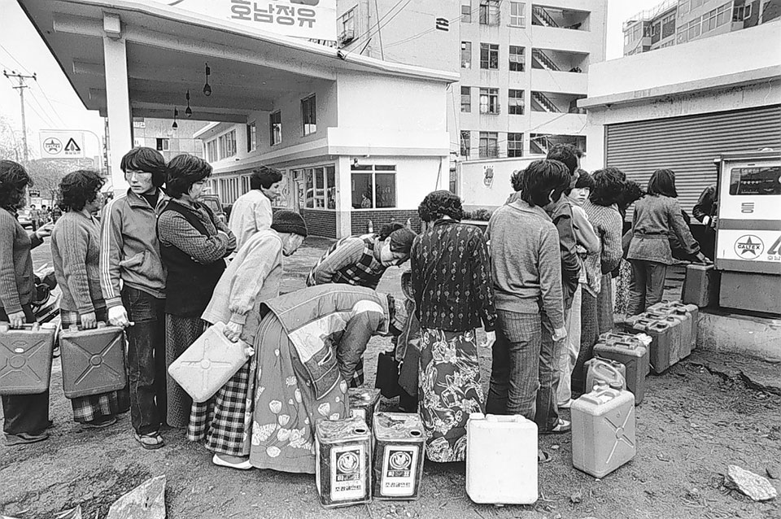
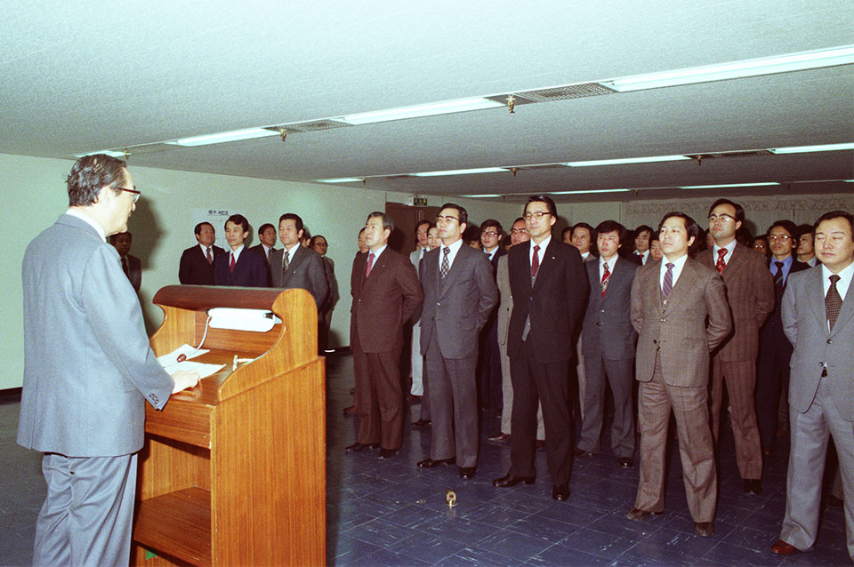
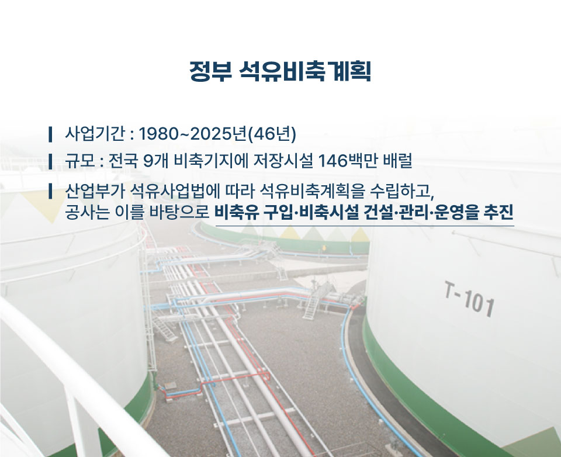
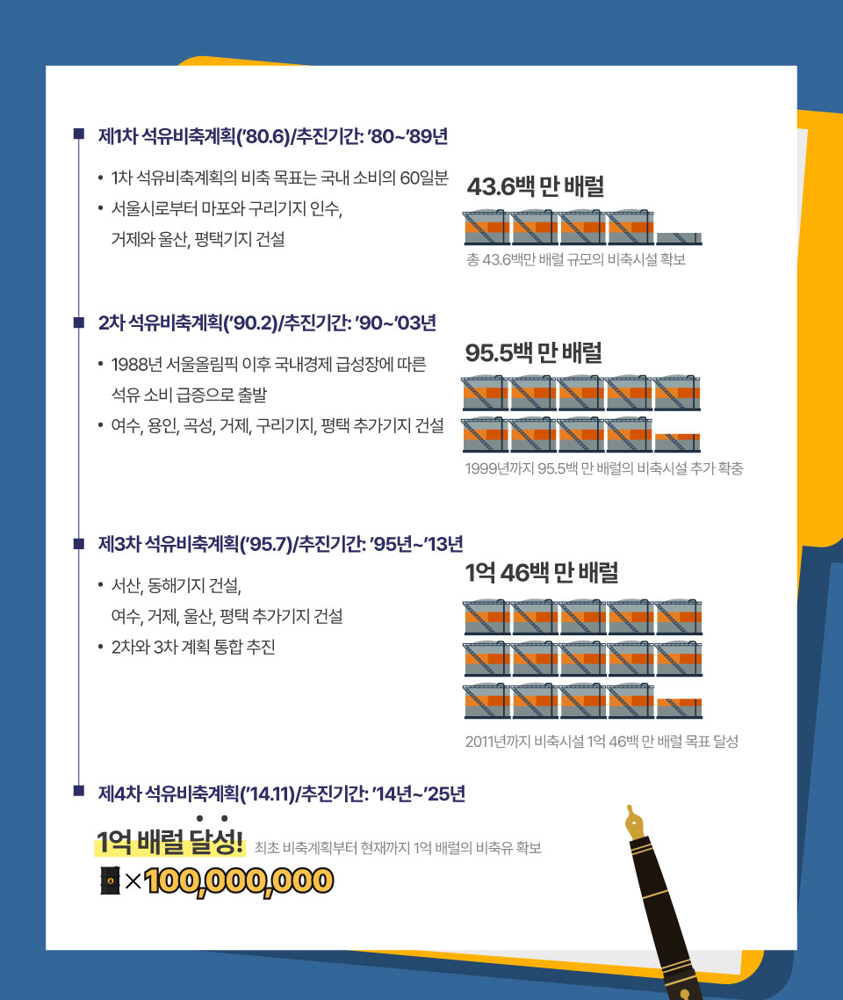
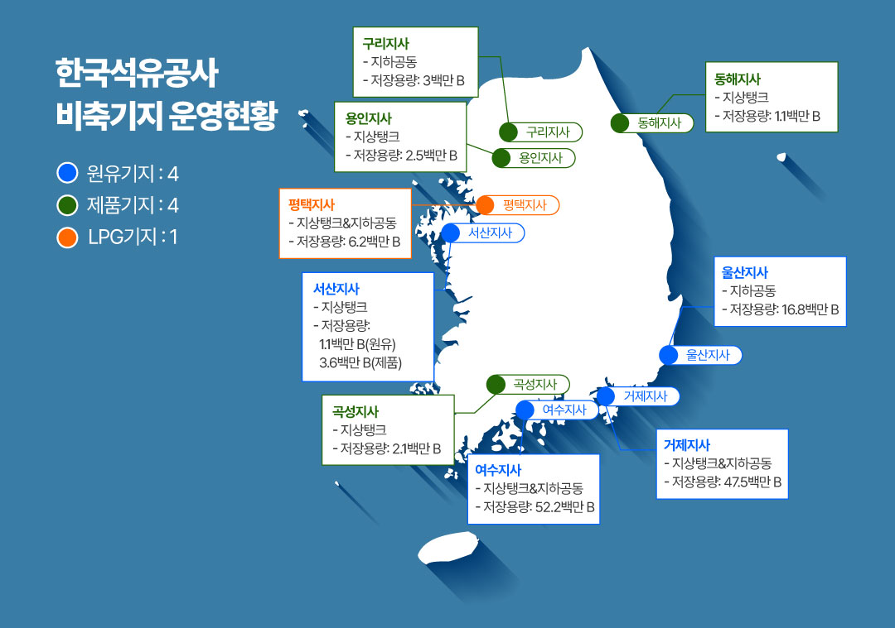

전 세계 하루 석유 소비량에 근접하는 양, 우리나라 모든 국민이
서울에서 부산까지 44번 왕복하는 연료의 양, 우리나라는 이 양에
해당하는 ‘석유 1억 배럴’을 정부 석유비축계획에 따라
한국석유공사 비축기지에 저장하고 있다.
이른바 K-Stockpile로 불리는 우리나라의 석유비축은, 어떠한
세계정세에도 흔들리지 않고 석유 위기에 대비하는 전략적인
비축사업이다. 4차 석유비축계획이 성공적으로 마무리되는 2025년,
그동안의 성과를 인포그래픽을 통해 살펴본다.

1차 석유파동 당시
1979년 한국석유공사 발족정부 석유비축계획의 역사
정부의 ‘석유비축계획’ 역사는 1980년 이전으로 거슬러 올라간다. 1974년과 1979년 두 차례에 걸친 석유파동, 이른바 오일쇼크로 심각한 국내 석유공급 사태를 경험하게 된 우리나라는, 석유 위기에 대비한 국내 석유 수급과 가격안정을 위해 1979년 한국석유공사를 설립했다. 당시 정부 비축은 전무하고 정유사 재고는 약 30일분에 불과한 상황이었으며, 석유공급 부족으로 국내 경제가 막대한 손실을 부담하게 되었다. 이러한 뼈아픈 경험을 바탕으로 정부 차원에서 이 사업을 추진하게 되었고, 공사의 설립 이후 1980년부터 정부 석유비축사업을 공식적으로 추진하게 되었다.

비축기지별 비축유 확보 현황
공사가 보유한 비축기지는 전국 9개 지역에 분포되어 있다. 울산과 거제, 여수 등의 원유 및 제품 기지가 안전하게 운영되고 있는데, 이 비축유의 80%는 모두 지하 비축시설에 저장되어 있다. 우리나라는 지금까지 미국 등 동맹국 및 국제에너지기구(IEA)간의 공조에 따라 총 6회에 걸쳐 26백만 배럴의 비축유를 방출하며 석유 위기에 대비한 바 있다.


올해 4차 정부 석유비축계획에 따라 1억 배럴을 성공적으로 달성한
공사는 내년부터 시작되는 5차 계획을 준비하고 있다. 기존
석유비축계획은 평균 10년 단위로 진행되었으나, 에너지 전환기를 맞아
2030년까지 5년 단위로 추진 기간이 축소됐다. 석유 수요에 대한
중장기 전망 데이터에 기반해 2030년까지 원유 비축 확대와 함께 국내
석유수요에 맞춘 비축원유·석유제품 구성 재조정 등 질적개선도 추진할
계획이다.
우리나라의 석유비축 규모는 전 세계적으로 미국, 일본, 독일에 이어
4위 수준이다. 정세가 불안한 중동지역에 대한 석유 의존도가 70%
이상, 또 최종 에너지의 소비량에서 석유가 47% 비중을 차지한다는
점을 고려할 때 이 정도의 대규모 석유비축을 통해 석유 위기를 대비할
수 있다. 전쟁과도 같은 전 세계적인 위기, 어마어마한 자연재해
속에서도 80년대부터 지금까지 우리가 생활 속에서 에너지 위기를
경험할 수 없었던 이유는 바로 정부 석유비축계획과 공사의
석유비축사업이 있기 때문이다.